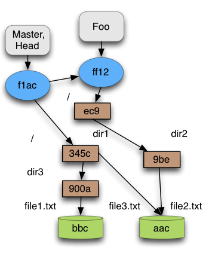

Git Repository
Git repository mirrors the evolution of a project during its lifetime. It is the place where the snapshots taken during the project construction are kept, as all the necessary information to allow the users to navigate through all the snapshots. The snapshot’s structure and snapshot's relations are kept using, what is called, Git objects. The information needed to go through the project is kept in, what is called, Git references. In the next sections we present both of them.
Git Objects
As we have presented before, Git keeps snapshots of how your system looked like on a certain moment in time. This moment in time is represented in Git by a commit. Each commit points to a tree (corresponding to a directory), that represents the structure of your project at that moment. So a tree contains others trees and/or blobs. In Git the files are not stored as such. What keeps is an object called blob that represents the content of files. The relation between the path of a file and the content of that path is kept on the trees corresponding to that path.
Next figure presents an example of a snapshot. We have a commit that points to a tree. This first tree corresponds to the root directory of the project. All the other trees (and blobs) corresponds to some directory (or file) preserving the relation between them.
In the next sections a detailed description about each object is given, but for now something that is useful to know is that each object is identified by a 40-character string. This string is calculated by taking the SHA I hash of the contents of the object. This approach has many advantages, being the two more important, in our opinion, the fact that it is possible to compare two objects only by comparing the hash and if two objects have the same content then only one of them is kept.
 Figure 3
Blob
A blob object, as said before, represents the content of a file and the blob identifier is calculated from the blob content. So if we have two files exactly with the same content, only one blob will be stored, even if, they have different names. This happens because the blob is not directly associated to a file. The relation between a path (of a file) and a blob is kept in the tree object. Figure 3 shows an example of a blob representing two files.
Tree
A tree is nothing else than a map from names to blobs and other trees. Also here, a tree is not associated to any specific directory. If two directories have exactly the same content they will be represented by the same tree object. Having the same content means having exactly the same relations, or in other words, we have exactly the same names in both trees and each name corresponds exactly to the same objects in both trees.
Commit
The commit object, is like a snapshot of the project on a certain moment in time. A commit object has more variety of information than the two objects addressed before. Looking a commit, it is possible to find out the following:
Author - The person responsible for the change on the project.
-
Committer - The person which actually created the commit. It is possible that the committer is different from the author. An author can create a patch, send it to the committer, which will create the commit.
-
Parent - The previous commit, or, the commit from which this one was created. It is possible for this field to be empty, when the commit is a Root Commit (the first commit to be done). It is also possible to have two parents, when the commit is a result from a merge operation.
Comment - It is mandatory, when creating a commit, to write a comment about the commit. Such comments should contain details about the changes that were done in the project.
Tree - It is a pointer for a tree, or in other words, it is a pointer for how the project looked like on a certain moment in time.
In our model, we concentrated our efforts in the Parent and in the Tree fields. We just care about the structure of the object model, so, we removed everything else that does not influences such structure. One property that we observed when modeling, is that, we cannot have cycles in the parent relation.
Tag
At last we have the tag object. The tag object is just a pointer to a commit with some more information. It can be used to mark a special commit, like a new version of the project. The structure is quite similar to the commit object. It has a tagger (the person who created the tag), a date in which the tag was created, a message (some comment from the tagger) and it points to a commit object. In our model we did not model this object, because when abstracting it looks like a branch, that we will see in next chapter.
Git references
Basically a reference is just a pointer to a commit. There is much more about references, but in this manual we will focus on Branches and the special reference HEAD.
Branches
One of the trump cards of Git is its definition of branches. In other VCS each time a branch is created a new copy of the entire repository has to be done. Thus, branch operations in those VCS are slow and hard to use. In Git, when a new branch is created the only thing that Git does is to create a new pointer to the current commit. The current commit is marked by a special reference called HEAD, that we present next.
HEAD
HEAD is maybe the most important reference in the repository. It indicates where you are situated in the repository. When a commit is done, Git has to know which commit is going to be the parent. It does so, looking into the HEAD. HEAD normally is a pointer to a branch, so when the commit is done, the HEAD is kept, but the branch points to the new commit. HEAD can identify directly a commit, like for example, when a checkout is performed using a commit hash. But in this document lets keep it simple, HEAD will identify always a branch.